What is monitored?
Ask which locations and materials are checked, how often and how the results are recorded.
FOR YOUR PROVIDERUnderstand the materials, moisture and questions behind a considered structural drying plan.

Drying is a conversation about construction, not just air.
Timber, plaster and masonry respond differently. Explain the build-up of your space where known and ask how the assessment will consider visible and concealed layers.
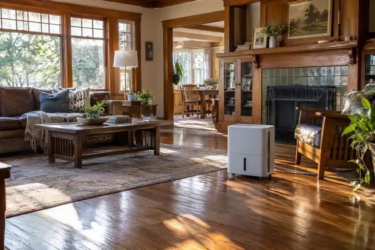
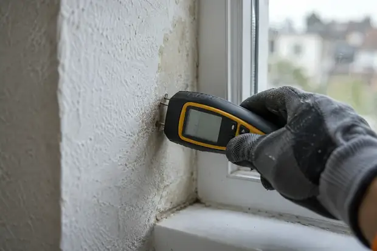
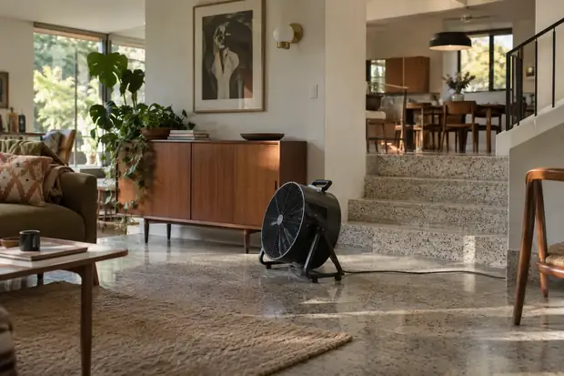
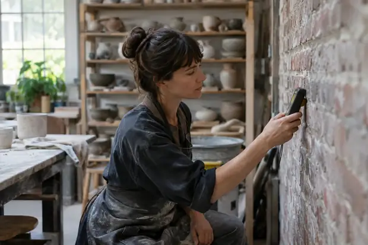
Explore the details that help describe your space.
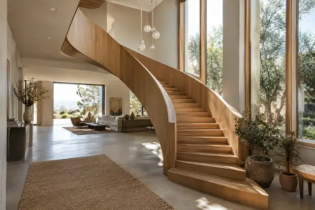
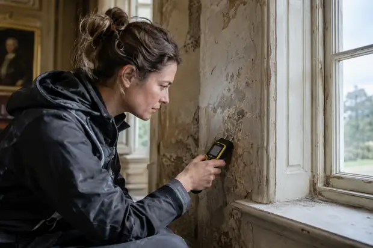
The layout gives each observation its context.
Ask how connected spaces, cavities and finishes affect the assessment. Discuss whether access is needed behind a surface and how the findings will be explained.
Prepare your questions

Explore the questions behind a drying plan.
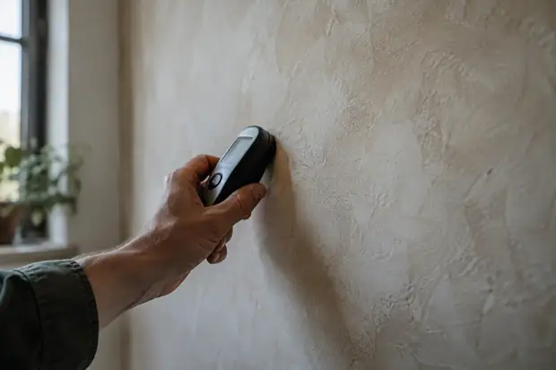
Ask which method is being used, where it is suitable and what the results can and cannot tell you.
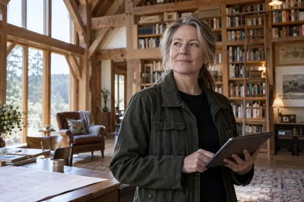
Ask how readings relate to the construction and adjacent areas. A single observation does not describe the whole room.
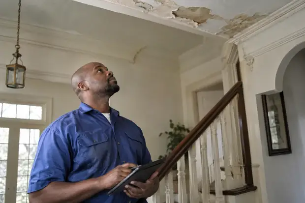
Discuss how repeat checks inform the plan. Ask what supports adjustments and when the next stage can be considered.
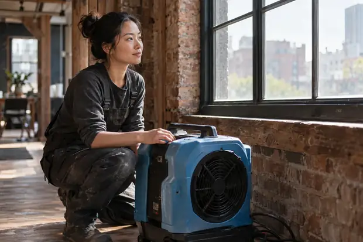
Clarify the practical details before agreeing to a plan.
Ask which locations and materials are checked, how often and how the results are recorded.
FOR YOUR PROVIDERDiscuss equipment, visits, access arrangements and any exclusions in the written quotation.
FOR YOUR PROVIDER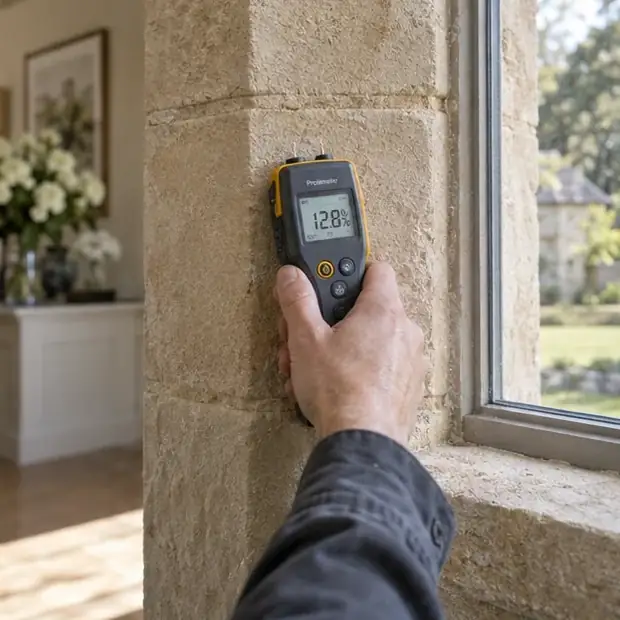
Construction gives moisture observations their meaning. Share known layers and discuss what can be checked without opening a surface.
Ask how readings relate to the material and finish.
Describe staining, movement and adjoining surfaces.
Discuss construction and the method used to assess it.
A drying proposal affects the way a room is used. Discuss practical arrangements before agreeing equipment and visits.

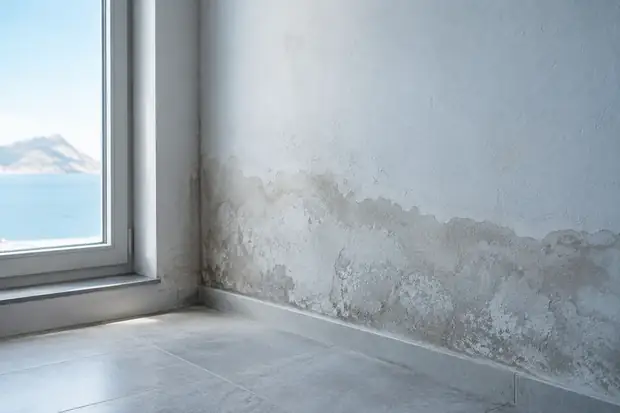
Understand the proposed layout.
Clarify where access must remain clear.
Ask how checks are arranged and recorded.
Agree how adjustments will be communicated.
One value needs context. Ask about the instrument, location, material and limitations before drawing conclusions.

Questions to discuss with the professionals involved.
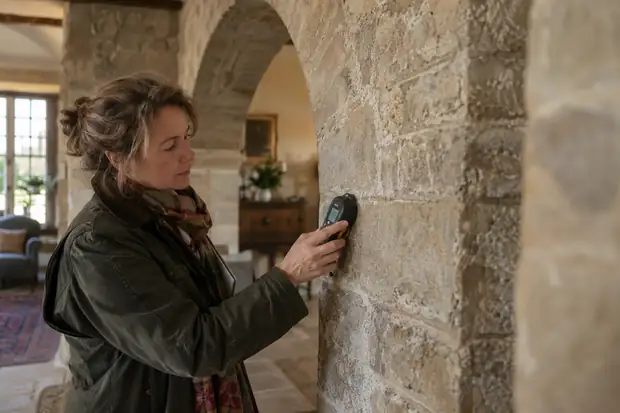
How are the affected layers identified?
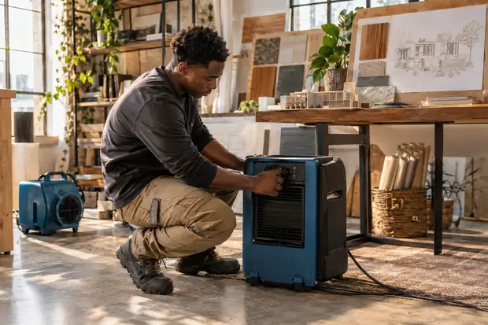
How will the setup suit this room?
What supports the next decision?
Request the initial findings and the areas checked. A shared record helps make the plan understandable. Ask how repeat observations support changes to the setup and the move towards repair.
Bring this into your enquiryAsk what has changed and whether further checks are needed. A shared record helps make the plan understandable. Ask how repeat observations support changes to the setup and the move towards repair.
Bring this into your enquiryClarify the evidence used to recommend finishing work. A shared record helps make the plan understandable. Ask how repeat observations support changes to the setup and the move towards repair.
Bring this into your enquiryBring the room’s use, materials and previous findings into the review. You do not need to interpret readings by yourself.
Your enquiry checklist
A starting outline is ready. Add these two details to complete your brief.
Ask for an explanation of new observations.
Clarify the equipment and access arrangements.
Agree the next review and the information you will receive.
Bring a little more clarity to the next conversation.
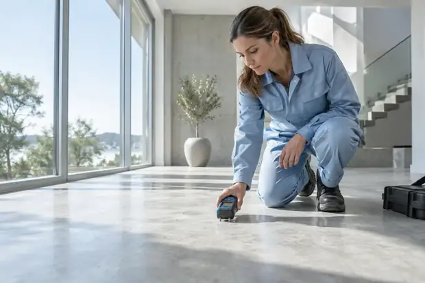
A surface appearance alone is not a property-specific assessment. Ask how the provider evaluates moisture within the relevant materials.
The conditions and materials vary. Ask the provider for an assessed plan and how it may change as progress is recorded.
Ask how completion is assessed and what documentation supports the recommendation to move into repair.
You and your chosen independent provider. Confirm assessment charges, exclusions and the written scope before proceeding.
Tell us about the space. Start a more useful conversation.
Let’s talk about it